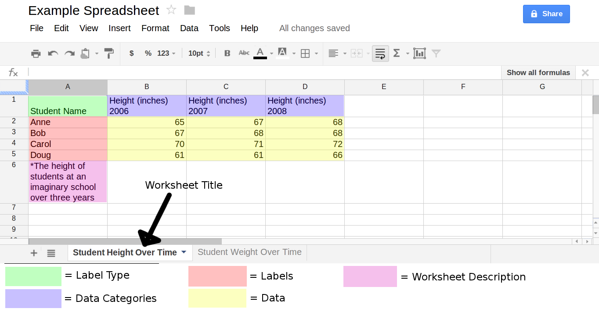

ContentsA. Graphs One or Two Graph Views Remove Display Options Graph Options B. Data Worksheets Categories Adding Data to Graph Edit Refresh About Link to Google 2. Basic Features D. Apply to All 3. Editing and Adding A. Edit Menu Formats Allowed Delete B. Add Menu Label or No Label Using a Link C. Google Formatting Permissions and Publishings Paste or Link Adding Via URL 4. Advanced Features B. Graph Scaling By Text Fitting Scales to Data in a Single Graph C. Drag and Click Editing |
SeeIt3 Correlations Tutorial (Work in Progress)Tutorial VideosIf you have any questions not covered by this tutorial, please email Matt.Steinwachs@gmail.com1. IntroNote: SeeIt3 is most compatible with Chrome followed by Firefox.A. Graphs
One or Two Graph View
To display two graphs on screen, click the "Two Graphs" button in the bar at the top of the screen. To display only one graph, clikc the "One Graph" button in the top bar, or click the "X" button in the top right of the graph your want to remove. RemoveTo remove a graph, click the "X" button in the top right corner. Display OptionsThe "Display Options" button in the top bar will open a menu where the appearance of SeeIt can be altered. The size of dots used in the graphs can be increased or decreased, as well as the size of text. Graphs can be displayed in black and white for compatibility with printers by selecting the "Black" checkbox. Data points can be displayed as solid or as colored rings by selecting the "Solid" checkbox. Additionally, the data points may be hidden entirely so that other visualizations can be more clearly seen. To hide data points select the "Hide" checkbox. To close the display menu, either click the "Display Options" button a second time, or click the "X" button in the top right of the menu. Graph OptionsThe wrench icon at the top left of a graph allows you to specify different visualizations. These will be covered in more details in Section 2 and 4. B. DataOf course, a graph is nothing without data. To access data to use in a graph, click the "Datasets" button on the left side of bar at the top of the screen.
Worksheets
Data is divided into worksheets which have been imported from Google Documents or created in SeeIt. Click the worksheet's title in the data menu to expand it and reveal its options and the categories it contains. CategoriesEach Worksheet contains several categories of data which are titled and assigned colors. Adding Data to GraphTo view a category of data in a graph, simply click and drag a category from the dataset menu to the X or Y axis of the graph you want to add to. To remove a category from a graph, click and drag the category off the side of the screen to remove it completely, or drag it another axis or another graph to move it there. EditThe pencil icon under each worksheet's title opens a menu that shows that worksheets data in a tab separated table. This menu will be covered in more detail in Section 3. RefreshIf you have made changes to the data in a worksheet loaded from Google Documents and want to reload it, click the circular arrow icon below that worksheet's title. AboutA worksheet can include text with a description of data it contains. To view this description click the question mark icon below a worksheet's title. To close the description window, click the question mark button again, or click the "X" button in the top right corner of the description window. Link to GoogleTo view a worksheet with Google Documents click the document icon below that worksheet's title. 2. Basic FeaturesNot FinishedD. Apply to AllIf you want the settings of one graph to be applied to all graphs you've added, click the apply all button. This includes any visualizations and scale. See section 4b for details regarding scale and the apply all button. 3. Editing and Adding WorksheetsA. Edit Menu
Formats Allowed
Data is formatted as rows of entries separated by tabs or commas but not both. The top row designates the titles of each category, and any row after the first contains data. The leftmost column contains labels for datapoints. Data is displayed in the edit menu in a way that makes it easy to copy and paste directly into a spreadsheet. Columns may not be properly aligned when viewed in the edit menu. DeleteTo remove an entire worksheet from the data menu, click the delete button at the bottom of the worksheet edit menu, and click yes on the confirmation dialogue that appears. B. Add MenuTo add a new worksheet, click the "Add a Worksheet" button at the bottom of the data menu. The format for data entered in the form is the same as for editing.
Label or no Label
When creating a new dataset, you can choose to not specify labels for data by unchecking the "First Column is Label" checkbox. If you uncheck this option, the leftmost column will be considered the first category of data. A default label will be assigned to any data entered in this way. Using a LinkIf you have data saved in a Google Documents spreadsheet, and the spreadsheet has been published (covered in the next section) you can add the spreadsheet to SeeIt by opening the add worksheet menu, clicking the "Load worksheet from URL" button, pasting the link to the google spreadsheet in the textbox that appears, and clicking the "Submit" button. C. Google
Formatting
SeeIt requires data imported from Google Documents spreadsheet to be in a specific format. The left most column contains labels for the data in each row. The top left cell is for the title of the labels. For instance, the top left cell could contain the word "State" indicating that the labels in the leftmost column correspond to different states in the U.S. The top row of the spreadsheet, excluding the leftmost cell, contains the titles of the categories of data. The cells below each category title contain the data in the that category. Finally, to include a description of the data which can be read in SeeIt, place text beginning with "*" in the cell below the last label in the leftmost column.  Permissions and PublishingFor a Google Documents spreadsheet to be imported into SeeIt it must be published to the web. To do this, in the Google spreadsheet click File and then click the "Publish to the Web..." option. In the menu that appears click the "Start Publishing" button. Now the URL for the spreadsheet can be pasted into SeeIt. Paste or LinkAlternatively, you can copy the contents of a Google spreadsheet and paste it into the textbox in the add worksheet menu. Adding Via URLA spreadsheet can be imported into SeeIt automatically as it loads by using a special URL.
At the end of the URL to SeeIt Correlations 4. Advanced FeaturesThe following features can be accessed by clicking the "Advanced Mode" button on the right side of the top toolbar. B. Graph Scaling
By Text
To change the scale of a graph, first click the wrench icon in a graph to bring up the graph options. To change the lower bound of a graph enter a number in the "Min" textbox. To change the upper bound of a graph enter a number in the "Max" textbox. If you enter a number in the "Min" textbox that is larger than the number in the "Max" textbox, or visa-versa, the value will revert to the whatever it was previously. Fitting Scales to Data in a Single GraphTo set the scale of a graph to closely fit the data it contains, first click the wrench icon in a graph to bring up the graph options, then select the "Fit scales individually" checkbox. C. Drag and Click EditingTo edit the data in a graph interactively, first click the "Edit Mode" button in the top toolbar. If edit mode is enabled the "Edit Mode" button will be shown in red as well as the graph borders. If more than one category of data has been added to a graph, the category that is currently selected will be be surrounded by a red box. If you click within a graph while edit mode is enabled, a new point will be added to the category that is selected. You can change the value of any point by clicking and dragging it within the graph. If you drag a point off the side of a graph it will be deleted. While dragging, either the current value of the point or the word delete will be shown above the cursor. If you have any questions not covered by this tutorial, please email Matt.Steinwachs@gmail.com |